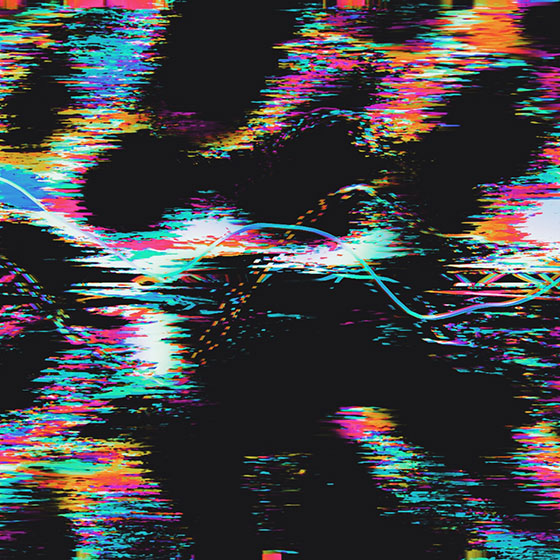
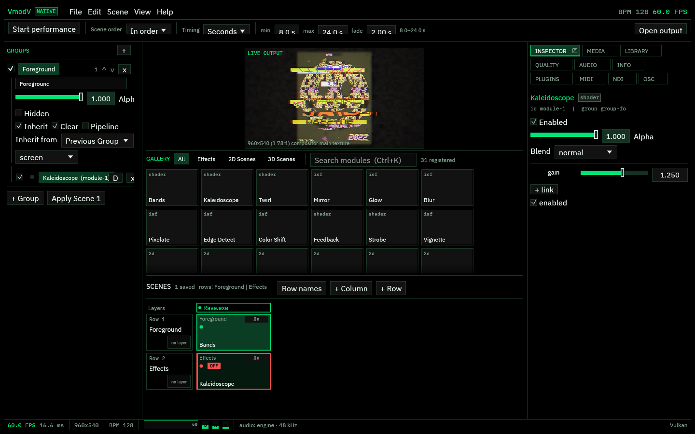

VmodV
modular audio visualisation for Linux — one native process, powered by Rust and wgpu
Live GPU Compositing
A wgpu/Vulkan frame graph, texture pool and canvas-blend pipeline drive every output. One native process, no browser in the middle.
Audio Analysis
Bands, tempo, phrase and feature detection with BeatDetektor, plus PipeWire and ALSA capture, automatic BPM and tap tempo.
Scenes & Performance
Capture the live output into named Scenes, then sequence them on a timeline with transitions, rows and playlists.
Bring Your Own Modules
A bundled ISF corpus translated to WGSL, ported Point10 scenes and 2D modules — or add your own ISF shaders and MilkDrop presets. User folders hot-reload into the Gallery. Browse the full catalogue →
Media & Control
Cameras, video files, screen capture, MIDI, OSC and NDI. Patch audio and controls into any module, group or output.
Your Workspace
A resizable, dockable egui UI, sandboxed expressions and opt-in JS plugins. Presets, layout and media state persist between sessions.
# The app
Groups, live output, module Gallery, Scenes grid and Inspector — all in one window.

# Acknowledgements
Thank you to:
- Hugh Rawlinson, Nevo Segal and Jakub Fiala for the audio analysis engine, meyda
- Dario Villanueva for his advice and introduction to live visuals which inspired this project
- Tim Pietrusky & family for the bi-yearly modV hackday
- Live:JS for inspiration, motivation and advice
- Charles J. Cliffe for BeatDetektor
- the authors of the ISF, Shadertoy, Point10 and Plane9 works credited in THIRD_PARTY_NOTICES.md
- All the wonderful contributors to modV and VmodV